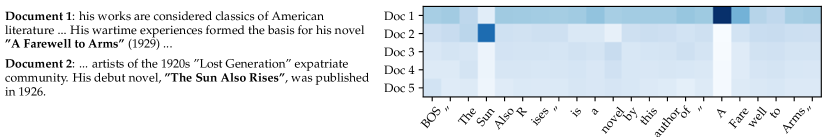
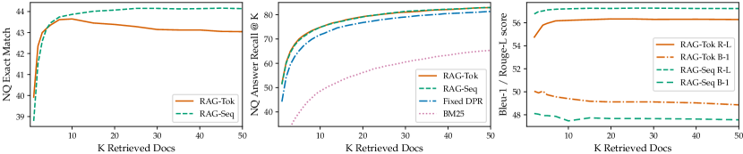
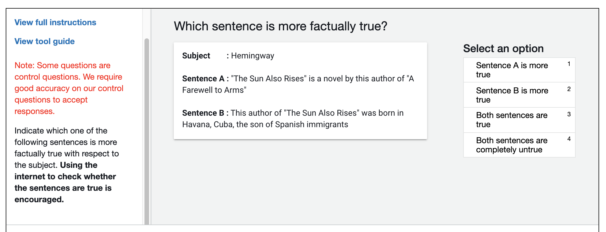

Retrieval-Augmented Generation for Knowledge-Intensive NLP Tasks
Abstract
Large pre-trained language models have been shown to store factual knowledge in their parameters, and achieve state-of-the-art results when fine-tuned on downstream NLP tasks. However, their ability to access and precisely manipulate knowledge is still limited, and hence on knowledge-intensive tasks, their performance lags behind task-specific architectures. Additionally, providing provenance for their decisions and updating their world knowledge remain open research problems. Pre-trained models with a differentiable access mechanism to explicit non-parametric memory have so far been only investigated for extractive downstream tasks. We explore a general-purpose fine-tuning recipe for retrieval-augmented generation (RAG) — models which combine pre-trained parametric and non-parametric memory for language generation. We introduce RAG models where the parametric memory is a pre-trained seq2seq model and the non-parametric memory is a dense vector index of Wikipedia, accessed with a pre-trained neural retriever. We compare two RAG formulations, one which conditions on the same retrieved passages across the whole generated sequence, and another which can use different passages per token. We fine-tune and evaluate our models on a wide range of knowledge-intensive NLP tasks and set the state of the art on three open domain QA tasks, outperforming parametric seq2seq models and task-specific retrieve-and-extract architectures. For language generation tasks, we find that RAG models generate more specific, diverse and factual language than a state-of-the-art parametric-only seq2seq baseline.
1 Introduction
Pre-trained neural language models have been shown to learn a substantial amount of in-depth knowledge from data [47]. They can do so without any access to an external memory, as a parameterized implicit knowledge base [51, 52]. While this development is exciting, such models do have downsides: They cannot easily expand or revise their memory, can’t straightforwardly provide insight into their predictions, and may produce “hallucinations” [38]. Hybrid models that combine parametric memory with non-parametric (i.e., retrieval-based) memories [20, 26, 48] can address some of these issues because knowledge can be directly revised and expanded, and accessed knowledge can be inspected and interpreted. REALM [20] and ORQA [31], two recently introduced models that combine masked language models [8] with a differentiable retriever, have shown promising results, but have only explored open-domain extractive question answering. Here, we bring hybrid parametric and non-parametric memory to the “workhorse of NLP,” i.e. sequence-to-sequence (seq2seq) models.
We endow pre-trained, parametric-memory generation models with a non-parametric memory through a general-purpose fine-tuning approach which we refer to as retrieval-augmented generation (RAG). We build RAG models where the parametric memory is a pre-trained seq2seq transformer, and the non-parametric memory is a dense vector index of Wikipedia, accessed with a pre-trained neural retriever. We combine these components in a probabilistic model trained end-to-end (Fig. 1). The retriever (Dense Passage Retriever [26], henceforth DPR) provides latent documents conditioned on the input, and the seq2seq model (BART [32]) then conditions on these latent documents together with the input to generate the output. We marginalize the latent documents with a top-K approximation, either on a per-output basis (assuming the same document is responsible for all tokens) or a per-token basis (where different documents are responsible for different tokens). Like T5 [51] or BART, RAG can be fine-tuned on any seq2seq task, whereby both the generator and retriever are jointly learned.
There has been extensive previous work proposing architectures to enrich systems with non-parametric memory which are trained from scratch for specific tasks, e.g. memory networks [64, 55], stack-augmented networks [25] and memory layers [30]. In contrast, we explore a setting where both parametric and non-parametric memory components are pre-trained and pre-loaded with extensive knowledge. Crucially, by using pre-trained access mechanisms, the ability to access knowledge is present without additional training.
Our results highlight the benefits of combining parametric and non-parametric memory with generation for knowledge-intensive tasks—tasks that humans could not reasonably be expected to perform without access to an external knowledge source. Our RAG models achieve state-of-the-art results on open Natural Questions [29], WebQuestions [3] and CuratedTrec [2] and strongly outperform recent approaches that use specialised pre-training objectives on TriviaQA [24]. Despite these being extractive tasks, we find that unconstrained generation outperforms previous extractive approaches. For knowledge-intensive generation, we experiment with MS-MARCO [1] and Jeopardy question generation, and we find that our models generate responses that are more factual, specific, and diverse than a BART baseline. For FEVER [56] fact verification, we achieve results within 4.3% of state-of-the-art pipeline models which use strong retrieval supervision. Finally, we demonstrate that the non-parametric memory can be replaced to update the models’ knowledge as the world changes.111Code to run experiments with RAG has been open-sourced as part of the HuggingFace Transformers Library [66] and can be found at https://github.com/huggingface/transformers/blob/master/examples/rag/. An interactive demo of RAG models can be found at https://huggingface.co/rag/

2 Methods
We explore RAG models, which use the input sequence to retrieve text documents and use them as additional context when generating the target sequence . As shown in Figure 1, our models leverage two components: (i) a retriever with parameters that returns (top-K truncated) distributions over text passages given a query and (ii) a generator parametrized by that generates a current token based on a context of the previous tokens , the original input and a retrieved passage .
To train the retriever and generator end-to-end, we treat the retrieved document as a latent variable. We propose two models that marginalize over the latent documents in different ways to produce a distribution over generated text. In one approach, RAG-Sequence, the model uses the same document to predict each target token. The second approach, RAG-Token, can predict each target token based on a different document. In the following, we formally introduce both models and then describe the and components, as well as the training and decoding procedure.
2.1 Models
RAG-Sequence Model
The RAG-Sequence model uses the same retrieved document to generate the complete sequence. Technically, it treats the retrieved document as a single latent variable that is marginalized to get the seq2seq probability via a top-K approximation. Concretely, the top K documents are retrieved using the retriever, and the generator produces the output sequence probability for each document, which are then marginalized,
RAG-Token Model
In the RAG-Token model we can draw a different latent document for each target token and marginalize accordingly. This allows the generator to choose content from several documents when producing an answer. Concretely, the top K documents are retrieved using the retriever, and then the generator produces a distribution for the next output token for each document, before marginalizing, and repeating the process with the following output token, Formally, we define:
Finally, we note that RAG can be used for sequence classification tasks by considering the target class as a target sequence of length one, in which case RAG-Sequence and RAG-Token are equivalent.
2.2 Retriever: DPR
The retrieval component is based on DPR [26]. DPR follows a bi-encoder architecture:
where is a dense representation of a document produced by a BERTBASE document encoder [8], and a query representation produced by a query encoder, also based on BERTBASE. Calculating , the list of documents with highest prior probability , is a Maximum Inner Product Search (MIPS) problem, which can be approximately solved in sub-linear time [23]. We use a pre-trained bi-encoder from DPR to initialize our retriever and to build the document index. This retriever was trained to retrieve documents which contain answers to TriviaQA [24] questions and Natural Questions [29]. We refer to the document index as the non-parametric memory.
2.3 Generator: BART
The generator component could be modelled using any encoder-decoder. We use BART-large [32], a pre-trained seq2seq transformer [58] with 400M parameters. To combine the input with the retrieved content when generating from BART, we simply concatenate them. BART was pre-trained using a denoising objective and a variety of different noising functions. It has obtained state-of-the-art results on a diverse set of generation tasks and outperforms comparably-sized T5 models [32]. We refer to the BART generator parameters as the parametric memory henceforth.
2.4 Training
We jointly train the retriever and generator components without any direct supervision on what document should be retrieved. Given a fine-tuning training corpus of input/output pairs , we minimize the negative marginal log-likelihood of each target, using stochastic gradient descent with Adam [28]. Updating the document encoder during training is costly as it requires the document index to be periodically updated as REALM does during pre-training [20]. We do not find this step necessary for strong performance, and keep the document encoder (and index) fixed, only fine-tuning the query encoder and the BART generator.
2.5 Decoding
At test time, RAG-Sequence and RAG-Token require different ways to approximate .
RAG-Token
The RAG-Token model can be seen as a standard, autoregressive seq2seq generator with transition probability: To decode, we can plug into a standard beam decoder.
RAG-Sequence
For RAG-Sequence, the likelihood does not break into a conventional per- token likelihood, hence we cannot solve it with a single beam search. Instead, we run beam search for each document , scoring each hypothesis using . This yields a set of hypotheses , some of which may not have appeared in the beams of all documents. To estimate the probability of an hypothesis we run an additional forward pass for each document for which does not appear in the beam, multiply generator probability with and then sum the probabilities across beams for the marginals. We refer to this decoding procedure as “Thorough Decoding.” For longer output sequences, can become large, requiring many forward passes. For more efficient decoding, we can make a further approximation that where was not generated during beam search from . This avoids the need to run additional forward passes once the candidate set has been generated. We refer to this decoding procedure as “Fast Decoding.”
3 Experiments
We experiment with RAG in a wide range of knowledge-intensive tasks. For all experiments, we use a single Wikipedia dump for our non-parametric knowledge source. Following Lee et al. [31] and Karpukhin et al. [26], we use the December 2018 dump. Each Wikipedia article is split into disjoint 100-word chunks, to make a total of 21M documents. We use the document encoder to compute an embedding for each document, and build a single MIPS index using FAISS [23] with a Hierarchical Navigable Small World approximation for fast retrieval [37]. During training, we retrieve the top documents for each query. We consider for training and set for test time using dev data. We now discuss experimental details for each task.
3.1 Open-domain Question Answering
Open-domain question answering (QA) is an important real-world application and common testbed for knowledge-intensive tasks [20]. We treat questions and answers as input-output text pairs and train RAG by directly minimizing the negative log-likelihood of answers. We compare RAG to the popular extractive QA paradigm [5, 7, 31, 26], where answers are extracted spans from retrieved documents, relying primarily on non-parametric knowledge. We also compare to “Closed-Book QA” approaches [52], which, like RAG, generate answers, but which do not exploit retrieval, instead relying purely on parametric knowledge. We consider four popular open-domain QA datasets: Natural Questions (NQ) [29], TriviaQA (TQA) [24]. WebQuestions (WQ) [3] and CuratedTrec (CT) [2]. As CT and WQ are small, we follow DPR [26] by initializing CT and WQ models with our NQ RAG model. We use the same train/dev/test splits as prior work [31, 26] and report Exact Match (EM) scores. For TQA, to compare with T5 [52], we also evaluate on the TQA Wiki test set.
3.2 Abstractive Question Answering
RAG models can go beyond simple extractive QA and answer questions with free-form, abstractive text generation. To test RAG’s natural language generation (NLG) in a knowledge-intensive setting, we use the MSMARCO NLG task v2.1 [43]. The task consists of questions, ten gold passages retrieved from a search engine for each question, and a full sentence answer annotated from the retrieved passages. We do not use the supplied passages, only the questions and answers, to treat MSMARCO as an open-domain abstractive QA task. MSMARCO has some questions that cannot be answered in a way that matches the reference answer without access to the gold passages, such as “What is the weather in Volcano, CA?” so performance will be lower without using gold passages. We also note that some MSMARCO questions cannot be answered using Wikipedia alone. Here, RAG can rely on parametric knowledge to generate reasonable responses.
3.3 Jeopardy Question Generation
To evaluate RAG’s generation abilities in a non-QA setting, we study open-domain question generation. Rather than use questions from standard open-domain QA tasks, which typically consist of short, simple questions, we propose the more demanding task of generating Jeopardy questions. Jeopardy is an unusual format that consists of trying to guess an entity from a fact about that entity. For example, “The World Cup” is the answer to the question “In 1986 Mexico scored as the first country to host this international sports competition twice.” As Jeopardy questions are precise, factual statements, generating Jeopardy questions conditioned on their answer entities constitutes a challenging knowledge-intensive generation task.
We use the splits from SearchQA [10], with 100K train, 14K dev, and 27K test examples. As this is a new task, we train a BART model for comparison. Following [67], we evaluate using the SQuAD-tuned Q-BLEU-1 metric [42]. Q-BLEU is a variant of BLEU with a higher weight for matching entities and has higher correlation with human judgment for question generation than standard metrics. We also perform two human evaluations, one to assess generation factuality, and one for specificity. We define factuality as whether a statement can be corroborated by trusted external sources, and specificity as high mutual dependence between the input and output [33]. We follow best practice and use pairwise comparative evaluation [34]. Evaluators are shown an answer and two generated questions, one from BART and one from RAG. They are then asked to pick one of four options—quuestion A is better, question B is better, both are good, or neither is good.
3.4 Fact Verification
FEVER [56] requires classifying whether a natural language claim is supported or refuted by Wikipedia, or whether there is not enough information to decide. The task requires retrieving evidence from Wikipedia relating to the claim and then reasoning over this evidence to classify whether the claim is true, false, or unverifiable from Wikipedia alone. FEVER is a retrieval problem coupled with an challenging entailment reasoning task. It also provides an appropriate testbed for exploring the RAG models’ ability to handle classification rather than generation. We map FEVER class labels (supports, refutes, or not enough info) to single output tokens and directly train with claim-class pairs. Crucially, unlike most other approaches to FEVER, we do not use supervision on retrieved evidence. In many real-world applications, retrieval supervision signals aren’t available, and models that do not require such supervision will be applicable to a wider range of tasks. We explore two variants: the standard 3-way classification task (supports/refutes/not enough info) and the 2-way (supports/refutes) task studied in Thorne and Vlachos [57]. In both cases we report label accuracy.
4 Results
| Model | Jeopardy | MSMARCO | FVR3 | FVR2 | ||
| B-1 | QB-1 | R-L | B-1 | Label Acc. | ||
| SotA | - | - | 49.8* | 49.9* | 76.8 | 92.2* |
| BART | 15.1 | 19.7 | 38.2 | 41.6 | 64.0 | 81.1 |
| RAG-Tok. | 17.3 | 22.2 | 40.1 | 41.5 | 72.5 | 89.5 |
| RAG-Seq. | 14.7 | 21.4 | 40.8 | 44.2 | ||
4.1 Open-domain Question Answering
Table 2 shows results for RAG along with state-of-the-art models. On all four open-domain QA tasks, RAG sets a new state of the art (only on the T5-comparable split for TQA). RAG combines the generation flexibility of the “closed-book” (parametric only) approaches and the performance of "open-book" retrieval-based approaches. Unlike REALM and T5+SSM, RAG enjoys strong results without expensive, specialized “salient span masking” pre-training [20]. It is worth noting that RAG’s retriever is initialized using DPR’s retriever, which uses retrieval supervision on Natural Questions and TriviaQA. RAG compares favourably to the DPR QA system, which uses a BERT-based “cross-encoder” to re-rank documents, along with an extractive reader. RAG demonstrates that neither a re-ranker nor extractive reader is necessary for state-of-the-art performance.
There are several advantages to generating answers even when it is possible to extract them. Documents with clues about the answer but do not contain the answer verbatim can still contribute towards a correct answer being generated, which is not possible with standard extractive approaches, leading to more effective marginalization over documents. Furthermore, RAG can generate correct answers even when the correct answer is not in any retrieved document, achieving 11.8% accuracy in such cases for NQ, where an extractive model would score 0%.
4.2 Abstractive Question Answering
As shown in Table 2, RAG-Sequence outperforms BART on Open MS-MARCO NLG by 2.6 Bleu points and 2.6 Rouge-L points. RAG approaches state-of-the-art model performance, which is impressive given that (i) those models access gold passages with specific information required to generate the reference answer , (ii) many questions are unanswerable without the gold passages, and (iii) not all questions are answerable from Wikipedia alone. Table 3 shows some generated answers from our models. Qualitatively, we find that RAG models hallucinate less and generate factually correct text more often than BART. Later, we also show that RAG generations are more diverse than BART generations (see §4.5).
4.3 Jeopardy Question Generation
Table 2 shows that RAG-Token performs better than RAG-Sequence on Jeopardy question generation, with both models outperforming BART on Q-BLEU-1. 5 shows human evaluation results, over 452 pairs of generations from BART and RAG-Token. Evaluators indicated that BART was more factual than RAG in only 7.1% of cases, while RAG was more factual in 42.7% of cases, and both RAG and BART were factual in a further 17% of cases, clearly demonstrating the effectiveness of RAG on the task over a state-of-the-art generation model. Evaluators also find RAG generations to be more specific by a large margin. Table 3 shows typical generations from each model.
Jeopardy questions often contain two separate pieces of information, and RAG-Token may perform best because it can generate responses that combine content from several documents. Figure 2 shows an example. When generating “Sun”, the posterior is high for document 2 which mentions “The Sun Also Rises”. Similarly, document 1 dominates the posterior when “A Farewell to Arms” is generated. Intriguingly, after the first token of each book is generated, the document posterior flattens. This observation suggests that the generator can complete the titles without depending on specific documents. In other words, the model’s parametric knowledge is sufficient to complete the titles. We find evidence for this hypothesis by feeding the BART-only baseline with the partial decoding "The Sun. BART completes the generation "The Sun Also Rises" is a novel by this author of "The Sun Also Rises" indicating the title "The Sun Also Rises" is stored in BART’s parameters. Similarly, BART will complete the partial decoding "The Sun Also Rises" is a novel by this author of "A with "The Sun Also Rises" is a novel by this author of "A Farewell to Arms". This example shows how parametric and non-parametric memories work together—the non-parametric component helps to guide the generation, drawing out specific knowledge stored in the parametric memory.

| Task | Input | Model | Generation |
|---|---|---|---|
| MS-MARCO | define middle ear | BART | ?The middle ear is the part of the ear between the middle ear and the nose. |
| RAG-T | The middle ear is the portion of the ear internal to the eardrum. | ||
| RAG-S | The middle ear includes the tympanic cavity and the three ossicles. | ||
| what currency needed in scotland | BART | The currency needed in Scotland is Pound sterling. | |
| RAG-T | Pound is the currency needed in Scotland. | ||
| RAG-S | The currency needed in Scotland is the pound sterling. | ||
| Jeopardy Question Gener -ation | Washington | BART | ?This state has the largest number of counties in the U.S. |
| RAG-T | It’s the only U.S. state named for a U.S. president | ||
| RAG-S | It’s the state where you’ll find Mount Rainier National Park | ||
| The Divine Comedy | BART | *This epic poem by Dante is divided into 3 parts: the Inferno, the Purgatorio & the Purgatorio | |
| RAG-T | Dante’s "Inferno" is the first part of this epic poem | ||
| RAG-S | This 14th century work is divided into 3 sections: "Inferno", "Purgatorio" & "Paradiso" |
| Factuality | Specificity | |
|---|---|---|
| BART better | 7.1% | 16.8% |
| RAG better | 42.7% | 37.4% |
| Both good | 11.7% | 11.8% |
| Both poor | 17.7% | 6.9% |
| No majority | 20.8% | 20.1% |
| MSMARCO | Jeopardy QGen | |
|---|---|---|
| Gold | 89.6% | 90.0% |
| BART | 70.7% | 32.4% |
| RAG-Token | 77.8% | 46.8% |
| RAG-Seq. | 83.5% | 53.8% |
4.4 Fact Verification
Table 2 shows our results on FEVER. For 3-way classification, RAG scores are within 4.3% of state-of-the-art models, which are complex pipeline systems with domain-specific architectures and substantial engineering, trained using intermediate retrieval supervision, which RAG does not require. For 2-way classification, we compare against Thorne and Vlachos [57], who train RoBERTa [35] to classify the claim as true or false given the gold evidence sentence. RAG achieves an accuracy within 2.7% of this model, despite being supplied with only the claim and retrieving its own evidence. We also analyze whether documents retrieved by RAG correspond to documents annotated as gold evidence in FEVER. We calculate the overlap in article titles between the top documents retrieved by RAG and gold evidence annotations. We find that the top retrieved document is from a gold article in 71% of cases, and a gold article is present in the top 10 retrieved articles in 90% of cases.
4.5 Additional Results
Generation Diversity
Section 4.3 shows that RAG models are more factual and specific than BART for Jeopardy question generation. Following recent work on diversity-promoting decoding [33, 59, 39], we also investigate generation diversity by calculating the ratio of distinct ngrams to total ngrams generated by different models. Table 5 shows that RAG-Sequence’s generations are more diverse than RAG-Token’s, and both are significantly more diverse than BART without needing any diversity-promoting decoding.
| Model | NQ | TQA | WQ | CT | Jeopardy-QGen | MSMarco | FVR-3 | FVR-2 | ||
|---|---|---|---|---|---|---|---|---|---|---|
| Exact Match | B-1 | QB-1 | R-L | B-1 | Label Accuracy | |||||
| RAG-Token-BM25 | 29.7 | 41.5 | 32.1 | 33.1 | 17.5 | 22.3 | 55.5 | 48.4 | 75.1 | 91.6 |
| RAG-Sequence-BM25 | 31.8 | 44.1 | 36.6 | 33.8 | 11.1 | 19.5 | 56.5 | 46.9 | ||
| RAG-Token-Frozen | 37.8 | 50.1 | 37.1 | 51.1 | 16.7 | 21.7 | 55.9 | 49.4 | 72.9 | 89.4 |
| RAG-Sequence-Frozen | 41.2 | 52.1 | 41.8 | 52.6 | 11.8 | 19.6 | 56.7 | 47.3 | ||
| RAG-Token | 43.5 | 54.8 | 46.5 | 51.9 | 17.9 | 22.6 | 56.2 | 49.4 | 74.5 | 90.6 |
| RAG-Sequence | 44.0 | 55.8 | 44.9 | 53.4 | 15.3 | 21.5 | 57.2 | 47.5 | ||
Retrieval Ablations
A key feature of RAG is learning to retrieve relevant information for the task. To assess the effectiveness of the retrieval mechanism, we run ablations where we freeze the retriever during training. As shown in Table 6, learned retrieval improves results for all tasks.
We compare RAG’s dense retriever to a word overlap-based BM25 retriever [53]. Here, we replace RAG’s retriever with a fixed BM25 system, and use BM25 retrieval scores as logits when calculating . Table 6 shows the results. For FEVER, BM25 performs best, perhaps since FEVER claims are heavily entity-centric and thus well-suited for word overlap-based retrieval. Differentiable retrieval improves results on all other tasks, especially for Open-Domain QA, where it is crucial.
Index hot-swapping
An advantage of non-parametric memory models like RAG is that knowledge can be easily updated at test time. Parametric-only models like T5 or BART need further training to update their behavior as the world changes. To demonstrate, we build an index using the DrQA [5] Wikipedia dump from December 2016 and compare outputs from RAG using this index to the newer index from our main results (December 2018). We prepare a list of 82 world leaders who had changed between these dates and use a template “Who is {position}?” (e.g. “Who is the President of Peru?”) to query our NQ RAG model with each index. RAG answers 70% correctly using the 2016 index for 2016 world leaders and 68% using the 2018 index for 2018 world leaders. Accuracy with mismatched indices is low (12% with the 2018 index and 2016 leaders, 4% with the 2016 index and 2018 leaders). This shows we can update RAG’s world knowledge by simply replacing its non-parametric memory.
Effect of Retrieving more documents
Models are trained with either 5 or 10 retrieved latent documents, and we do not observe significant differences in performance between them. We have the flexibility to adjust the number of retrieved documents at test time, which can affect performance and runtime. Figure 3 (left) shows that retrieving more documents at test time monotonically improves Open-domain QA results for RAG-Sequence, but performance peaks for RAG-Token at 10 retrieved documents. Figure 3 (right) shows that retrieving more documents leads to higher Rouge-L for RAG-Token at the expense of Bleu-1, but the effect is less pronounced for RAG-Sequence.

5 Related Work
Single-Task Retrieval
Prior work has shown that retrieval improves performance across a variety of NLP tasks when considered in isolation. Such tasks include open-domain question answering [5, 29], fact checking [56], fact completion [48], long-form question answering [12], Wikipedia article generation [36], dialogue [41, 65, 9, 13], translation [17], and language modeling [19, 27]. Our work unifies previous successes in incorporating retrieval into individual tasks, showing that a single retrieval-based architecture is capable of achieving strong performance across several tasks.
General-Purpose Architectures for NLP
Prior work on general-purpose architectures for NLP tasks has shown great success without the use of retrieval. A single, pre-trained language model has been shown to achieve strong performance on various classification tasks in the GLUE benchmarks [60, 61] after fine-tuning [49, 8]. GPT-2 [50] later showed that a single, left-to-right, pre-trained language model could achieve strong performance across both discriminative and generative tasks. For further improvement, BART [32] and T5 [51, 52] propose a single, pre-trained encoder-decoder model that leverages bi-directional attention to achieve stronger performance on discriminative and generative tasks. Our work aims to expand the space of possible tasks with a single, unified architecture, by learning a retrieval module to augment pre-trained, generative language models.
Learned Retrieval
There is significant work on learning to retrieve documents in information retrieval, more recently with pre-trained, neural language models [44, 26] similar to ours. Some work optimizes the retrieval module to aid in a specific, downstream task such as question answering, using search [46], reinforcement learning [6, 63, 62], or a latent variable approach [31, 20] as in our work. These successes leverage different retrieval-based architectures and optimization techniques to achieve strong performance on a single task, while we show that a single retrieval-based architecture can be fine-tuned for strong performance on a variety of tasks.
Memory-based Architectures
Our document index can be seen as a large external memory for neural networks to attend to, analogous to memory networks [64, 55]. Concurrent work [14] learns to retrieve a trained embedding for each entity in the input, rather than to retrieve raw text as in our work. Other work improves the ability of dialog models to generate factual text by attending over fact embeddings [15, 13]. A key feature of our memory is that it is comprised of raw text rather distributed representations, which makes the memory both (i) human-readable, lending a form of interpretability to our model, and (ii) human-writable, enabling us to dynamically update the model’s memory by editing the document index. This approach has also been used in knowledge-intensive dialog, where generators have been conditioned on retrieved text directly, albeit obtained via TF-IDF rather than end-to-end learnt retrieval [9].
Retrieve-and-Edit approaches
Our method shares some similarities with retrieve-and-edit style approaches, where a similar training input-output pair is retrieved for a given input, and then edited to provide a final output. These approaches have proved successful in a number of domains including Machine Translation [18, 22] and Semantic Parsing [21]. Our approach does have several differences, including less of emphasis on lightly editing a retrieved item, but on aggregating content from several pieces of retrieved content, as well as learning latent retrieval, and retrieving evidence documents rather than related training pairs. This said, RAG techniques may work well in these settings, and could represent promising future work.
6 Discussion
In this work, we presented hybrid generation models with access to parametric and non-parametric memory. We showed that our RAG models obtain state of the art results on open-domain QA. We found that people prefer RAG’s generation over purely parametric BART, finding RAG more factual and specific. We conducted an thorough investigation of the learned retrieval component, validating its effectiveness, and we illustrated how the retrieval index can be hot-swapped to update the model without requiring any retraining. In future work, it may be fruitful to investigate if the two components can be jointly pre-trained from scratch, either with a denoising objective similar to BART or some another objective. Our work opens up new research directions on how parametric and non-parametric memories interact and how to most effectively combine them, showing promise in being applied to a wide variety of NLP tasks.
Broader Impact
This work offers several positive societal benefits over previous work: the fact that it is more strongly grounded in real factual knowledge (in this case Wikipedia) makes it “hallucinate” less with generations that are more factual, and offers more control and interpretability. RAG could be employed in a wide variety of scenarios with direct benefit to society, for example by endowing it with a medical index and asking it open-domain questions on that topic, or by helping people be more effective at their jobs.
With these advantages also come potential downsides: Wikipedia, or any potential external knowledge source, will probably never be entirely factual and completely devoid of bias. Since RAG can be employed as a language model, similar concerns as for GPT-2 [50] are valid here, although arguably to a lesser extent, including that it might be used to generate abuse, faked or misleading content in the news or on social media; to impersonate others; or to automate the production of spam/phishing content [54]. Advanced language models may also lead to the automation of various jobs in the coming decades [16]. In order to mitigate these risks, AI systems could be employed to fight against misleading content and automated spam/phishing.
Acknowledgments
The authors would like to thank the reviewers for their thoughtful and constructive feedback on this paper, as well as HuggingFace for their help in open-sourcing code to run RAG models. The authors would also like to thank Kyunghyun Cho and Sewon Min for productive discussions and advice. EP thanks supports from the NSF Graduate Research Fellowship. PL is supported by the FAIR PhD program.
References
- Bajaj et al. [2016] Payal Bajaj, Daniel Campos, Nick Craswell, Li Deng, Jianfeng Gao, Xiaodong Liu, Rangan Majumder, Andrew McNamara, Bhaskar Mitra, Tri Nguyen, Mir Rosenberg, Xia Song, Alina Stoica, Saurabh Tiwary, and Tong Wang. MS MARCO: A Human Generated MAchine Reading COmprehension Dataset. arXiv:1611.09268 [cs], November 2016. URL http://arxiv.org/abs/1611.09268. arXiv: 1611.09268.
- Baudiš and Šedivỳ [2015] Petr Baudiš and Jan Šedivỳ. Modeling of the question answering task in the yodaqa system. In International Conference of the Cross-Language Evaluation Forum for European Languages, pages 222–228. Springer, 2015. URL https://link.springer.com/chapter/10.1007%2F978-3-319-24027-5_20.
- Berant et al. [2013] Jonathan Berant, Andrew Chou, Roy Frostig, and Percy Liang. Semantic Parsing on Freebase from Question-Answer Pairs. In Proceedings of the 2013 Conference on Empirical Methods in Natural Language Processing, pages 1533–1544, Seattle, Washington, USA, October 2013. Association for Computational Linguistics. URL http://www.aclweb.org/anthology/D13-1160.
- Bi et al. [2020] Bin Bi, Chenliang Li, Chen Wu, Ming Yan, and Wei Wang. Palm: Pre-training an autoencoding&autoregressive language model for context-conditioned generation. ArXiv, abs/2004.07159, 2020. URL https://arxiv.org/abs/2004.07159.
- Chen et al. [2017] Danqi Chen, Adam Fisch, Jason Weston, and Antoine Bordes. Reading Wikipedia to Answer Open-Domain Questions. In Proceedings of the 55th Annual Meeting of the Association for Computational Linguistics (Volume 1: Long Papers), pages 1870–1879, Vancouver, Canada, July 2017. Association for Computational Linguistics. doi: 10.18653/v1/P17-1171. URL https://www.aclweb.org/anthology/P17-1171.
- Choi et al. [2017] Eunsol Choi, Daniel Hewlett, Jakob Uszkoreit, Illia Polosukhin, Alexandre Lacoste, and Jonathan Berant. Coarse-to-fine question answering for long documents. In Proceedings of the 55th Annual Meeting of the Association for Computational Linguistics (Volume 1: Long Papers), pages 209–220, Vancouver, Canada, July 2017. Association for Computational Linguistics. doi: 10.18653/v1/P17-1020. URL https://www.aclweb.org/anthology/P17-1020.
- Clark and Gardner [2017] Christopher Clark and Matt Gardner. Simple and Effective Multi-Paragraph Reading Comprehension. arXiv:1710.10723 [cs], October 2017. URL http://arxiv.org/abs/1710.10723. arXiv: 1710.10723.
- Devlin et al. [2019] Jacob Devlin, Ming-Wei Chang, Kenton Lee, and Kristina Toutanova. BERT: Pre-training of Deep Bidirectional Transformers for Language Understanding. In Proceedings of the 2019 Conference of the North American Chapter of the Association for Computational Linguistics: Human Language Technologies, Volume 1 (Long and Short Papers), pages 4171–4186, Minneapolis, Minnesota, June 2019. Association for Computational Linguistics. doi: 10.18653/v1/N19-1423. URL https://www.aclweb.org/anthology/N19-1423.
- Dinan et al. [2019] Emily Dinan, Stephen Roller, Kurt Shuster, Angela Fan, Michael Auli, and Jason Weston. Wizard of wikipedia: Knowledge-powered conversational agents. In International Conference on Learning Representations, 2019. URL https://openreview.net/forum?id=r1l73iRqKm.
- Dunn et al. [2017] Matthew Dunn, Levent Sagun, Mike Higgins, V. Ugur Guney, Volkan Cirik, and Kyunghyun Cho. SearchQA: A New Q&A Dataset Augmented with Context from a Search Engine. arXiv:1704.05179 [cs], April 2017. URL http://arxiv.org/abs/1704.05179. arXiv: 1704.05179.
- Fan et al. [2018] Angela Fan, Mike Lewis, and Yann Dauphin. Hierarchical neural story generation. In Proceedings of the 56th Annual Meeting of the Association for Computational Linguistics (Volume 1: Long Papers), pages 889–898, Melbourne, Australia, July 2018. Association for Computational Linguistics. doi: 10.18653/v1/P18-1082. URL https://www.aclweb.org/anthology/P18-1082.
- Fan et al. [2019] Angela Fan, Yacine Jernite, Ethan Perez, David Grangier, Jason Weston, and Michael Auli. ELI5: Long form question answering. In Proceedings of the 57th Annual Meeting of the Association for Computational Linguistics, pages 3558–3567, Florence, Italy, July 2019. Association for Computational Linguistics. doi: 10.18653/v1/P19-1346. URL https://www.aclweb.org/anthology/P19-1346.
- Fan et al. [2020] Angela Fan, Claire Gardent, Chloe Braud, and Antoine Bordes. Augmenting transformers with KNN-based composite memory, 2020. URL https://openreview.net/forum?id=H1gx1CNKPH.
- Févry et al. [2020] Thibault Févry, Livio Baldini Soares, Nicholas FitzGerald, Eunsol Choi, and Tom Kwiatkowski. Entities as experts: Sparse memory access with entity supervision. ArXiv, abs/2004.07202, 2020. URL https://arxiv.org/abs/2004.07202.
- Ghazvininejad et al. [2018] Marjan Ghazvininejad, Chris Brockett, Ming-Wei Chang, Bill Dolan, Jianfeng Gao, Wen tau Yih, and Michel Galley. A knowledge-grounded neural conversation model. In AAAI Conference on Artificial Intelligence, 2018. URL https://www.aaai.org/ocs/index.php/AAAI/AAAI18/paper/view/16710.
- Grace et al. [2017] Katja Grace, John Salvatier, Allan Dafoe, Baobao Zhang, and Owain Evans. When will AI exceed human performance? evidence from AI experts. CoRR, abs/1705.08807, 2017. URL http://arxiv.org/abs/1705.08807.
- Gu et al. [2018a] Jiatao Gu, Yong Wang, Kyunghyun Cho, and Victor O.K. Li. Search engine guided neural machine translation. In AAAI Conference on Artificial Intelligence, 2018a. URL https://www.aaai.org/ocs/index.php/AAAI/AAAI18/paper/view/17282.
- Gu et al. [2018b] Jiatao Gu, Yong Wang, Kyunghyun Cho, and Victor O.K. Li. Search engine guided neural machine translation. In 32nd AAAI Conference on Artificial Intelligence, AAAI 2018, 32nd AAAI Conference on Artificial Intelligence, AAAI 2018, pages 5133–5140. AAAI press, 2018b. 32nd AAAI Conference on Artificial Intelligence, AAAI 2018 ; Conference date: 02-02-2018 Through 07-02-2018.
- Guu et al. [2018] Kelvin Guu, Tatsunori B. Hashimoto, Yonatan Oren, and Percy Liang. Generating sentences by editing prototypes. Transactions of the Association for Computational Linguistics, 6:437–450, 2018. doi: 10.1162/tacl_a_00030. URL https://www.aclweb.org/anthology/Q18-1031.
- Guu et al. [2020] Kelvin Guu, Kenton Lee, Zora Tung, Panupong Pasupat, and Ming-Wei Chang. REALM: Retrieval-augmented language model pre-training. ArXiv, abs/2002.08909, 2020. URL https://arxiv.org/abs/2002.08909.
- Hashimoto et al. [2018] Tatsunori B Hashimoto, Kelvin Guu, Yonatan Oren, and Percy S Liang. A retrieve-and-edit framework for predicting structured outputs. In S. Bengio, H. Wallach, H. Larochelle, K. Grauman, N. Cesa-Bianchi, and R. Garnett, editors, Advances in Neural Information Processing Systems 31, pages 10052–10062. Curran Associates, Inc., 2018. URL http://papers.nips.cc/paper/8209-a-retrieve-and-edit-framework-for-predicting-structured-outputs.pdf.
- Hossain et al. [2020] Nabil Hossain, Marjan Ghazvininejad, and Luke Zettlemoyer. Simple and effective retrieve-edit-rerank text generation. In Proceedings of the 58th Annual Meeting of the Association for Computational Linguistics, pages 2532–2538, Online, July 2020. Association for Computational Linguistics. doi: 10.18653/v1/2020.acl-main.228. URL https://www.aclweb.org/anthology/2020.acl-main.228.
- Johnson et al. [2017] Jeff Johnson, Matthijs Douze, and Hervé Jégou. Billion-scale similarity search with gpus. arXiv preprint arXiv:1702.08734, 2017. URL https://arxiv.org/abs/1702.08734.
- Joshi et al. [2017] Mandar Joshi, Eunsol Choi, Daniel Weld, and Luke Zettlemoyer. TriviaQA: A Large Scale Distantly Supervised Challenge Dataset for Reading Comprehension. In Proceedings of the 55th Annual Meeting of the Association for Computational Linguistics (Volume 1: Long Papers), pages 1601–1611, Vancouver, Canada, July 2017. Association for Computational Linguistics. doi: 10.18653/v1/P17-1147. URL https://www.aclweb.org/anthology/P17-1147.
- Joulin and Mikolov [2015] Armand Joulin and Tomas Mikolov. Inferring algorithmic patterns with stack-augmented recurrent nets. In Proceedings of the 28th International Conference on Neural Information Processing Systems - Volume 1, NIPS’15, page 190–198, Cambridge, MA, USA, 2015. MIT Press. URL https://papers.nips.cc/paper/5857-inferring-algorithmic-patterns-with-stack-augmented-recurrent-nets.
- Karpukhin et al. [2020] Vladimir Karpukhin, Barlas Oguz, Sewon Min, Ledell Wu, Sergey Edunov, Danqi Chen, and Wen-tau Yih. Dense passage retrieval for open-domain question answering. arXiv preprint arXiv:2004.04906, 2020. URL https://arxiv.org/abs/2004.04906.
- Khandelwal et al. [2020] Urvashi Khandelwal, Omer Levy, Dan Jurafsky, Luke Zettlemoyer, and Mike Lewis. Generalization through memorization: Nearest neighbor language models. In International Conference on Learning Representations, 2020. URL https://openreview.net/forum?id=HklBjCEKvH.
- Kingma and Ba [2015] Diederik P. Kingma and Jimmy Ba. Adam: A method for stochastic optimization. In Yoshua Bengio and Yann LeCun, editors, 3rd International Conference on Learning Representations, ICLR 2015, San Diego, CA, USA, May 7-9, 2015, Conference Track Proceedings, 2015. URL http://arxiv.org/abs/1412.6980.
- Kwiatkowski et al. [2019] Tom Kwiatkowski, Jennimaria Palomaki, Olivia Redfield, Michael Collins, Ankur Parikh, Chris Alberti, Danielle Epstein, Illia Polosukhin, Matthew Kelcey, Jacob Devlin, Kenton Lee, Kristina N. Toutanova, Llion Jones, Ming-Wei Chang, Andrew Dai, Jakob Uszkoreit, Quoc Le, and Slav Petrov. Natural Questions: a Benchmark for Question Answering Research. Transactions of the Association of Computational Linguistics, 2019. URL https://tomkwiat.users.x20web.corp.google.com/papers/natural-questions/main-1455-kwiatkowski.pdf.
- Lample et al. [2019] Guillaume Lample, Alexandre Sablayrolles, Marc’ Aurelio Ranzato, Ludovic Denoyer, and Herve Jegou. Large memory layers with product keys. In H. Wallach, H. Larochelle, A. Beygelzimer, F. d’ Alché-Buc, E. Fox, and R. Garnett, editors, Advances in Neural Information Processing Systems 32, pages 8548–8559. Curran Associates, Inc., 2019. URL http://papers.nips.cc/paper/9061-large-memory-layers-with-product-keys.pdf.
- Lee et al. [2019] Kenton Lee, Ming-Wei Chang, and Kristina Toutanova. Latent retrieval for weakly supervised open domain question answering. In Proceedings of the 57th Annual Meeting of the Association for Computational Linguistics, pages 6086–6096, Florence, Italy, July 2019. Association for Computational Linguistics. doi: 10.18653/v1/P19-1612. URL https://www.aclweb.org/anthology/P19-1612.
- Lewis et al. [2019] Mike Lewis, Yinhan Liu, Naman Goyal, Marjan Ghazvininejad, Abdelrahman Mohamed, Omer Levy, Veselin Stoyanov, and Luke Zettlemoyer. BART: Denoising sequence-to-sequence pre-training for natural language generation, translation, and comprehension. arXiv preprint arXiv:1910.13461, 2019. URL https://arxiv.org/abs/1910.13461.
- Li et al. [2016] Jiwei Li, Michel Galley, Chris Brockett, Jianfeng Gao, and Bill Dolan. A diversity-promoting objective function for neural conversation models. In Proceedings of the 2016 Conference of the North American Chapter of the Association for Computational Linguistics: Human Language Technologies, pages 110–119, San Diego, California, June 2016. Association for Computational Linguistics. doi: 10.18653/v1/N16-1014. URL https://www.aclweb.org/anthology/N16-1014.
- Li et al. [2019] Margaret Li, Jason Weston, and Stephen Roller. Acute-eval: Improved dialogue evaluation with optimized questions and multi-turn comparisons. ArXiv, abs/1909.03087, 2019. URL https://arxiv.org/abs/1909.03087.
- Liu et al. [2019] Hairong Liu, Mingbo Ma, Liang Huang, Hao Xiong, and Zhongjun He. Robust neural machine translation with joint textual and phonetic embedding. In Proceedings of the 57th Annual Meeting of the Association for Computational Linguistics, pages 3044–3049, Florence, Italy, July 2019. Association for Computational Linguistics. doi: 10.18653/v1/P19-1291. URL https://www.aclweb.org/anthology/P19-1291.
- Liu* et al. [2018] Peter J. Liu*, Mohammad Saleh*, Etienne Pot, Ben Goodrich, Ryan Sepassi, Lukasz Kaiser, and Noam Shazeer. Generating wikipedia by summarizing long sequences. In International Conference on Learning Representations, 2018. URL https://openreview.net/forum?id=Hyg0vbWC-.
- Malkov and Yashunin [2016] Yury A. Malkov and D. A. Yashunin. Efficient and robust approximate nearest neighbor search using hierarchical navigable small world graphs. IEEE Transactions on Pattern Analysis and Machine Intelligence, 42:824–836, 2016. URL https://arxiv.org/abs/1603.09320.
- Marcus [2020] Gary Marcus. The next decade in ai: four steps towards robust artificial intelligence. arXiv preprint arXiv:2002.06177, 2020. URL https://arxiv.org/abs/2002.06177.
- Massarelli et al. [2019] Luca Massarelli, Fabio Petroni, Aleksandra Piktus, Myle Ott, Tim Rocktäschel, Vassilis Plachouras, Fabrizio Silvestri, and Sebastian Riedel. How decoding strategies affect the verifiability of generated text. arXiv preprint arXiv:1911.03587, 2019. URL https://arxiv.org/abs/1911.03587.
- Micikevicius et al. [2018] Paulius Micikevicius, Sharan Narang, Jonah Alben, Gregory Diamos, Erich Elsen, David Garcia, Boris Ginsburg, Michael Houston, Oleksii Kuchaiev, Ganesh Venkatesh, and Hao Wu. Mixed precision training. In ICLR, 2018. URL https://openreview.net/forum?id=r1gs9JgRZ.
- Moghe et al. [2018] Nikita Moghe, Siddhartha Arora, Suman Banerjee, and Mitesh M. Khapra. Towards exploiting background knowledge for building conversation systems. In Proceedings of the 2018 Conference on Empirical Methods in Natural Language Processing, pages 2322–2332, Brussels, Belgium, October-November 2018. Association for Computational Linguistics. doi: 10.18653/v1/D18-1255. URL https://www.aclweb.org/anthology/D18-1255.
- Nema and Khapra [2018] Preksha Nema and Mitesh M. Khapra. Towards a better metric for evaluating question generation systems. In Proceedings of the 2018 Conference on Empirical Methods in Natural Language Processing, pages 3950–3959, Brussels, Belgium, October-November 2018. Association for Computational Linguistics. doi: 10.18653/v1/D18-1429. URL https://www.aclweb.org/anthology/D18-1429.
- Nguyen et al. [2016] Tri Nguyen, Mir Rosenberg, Xia Song, Jianfeng Gao, Saurabh Tiwary, Rangan Majumder, and Li Deng. MS MARCO: A human generated machine reading comprehension dataset. In Tarek Richard Besold, Antoine Bordes, Artur S. d’Avila Garcez, and Greg Wayne, editors, Proceedings of the Workshop on Cognitive Computation: Integrating neural and symbolic approaches 2016 co-located with the 30th Annual Conference on Neural Information Processing Systems (NIPS 2016), Barcelona, Spain, December 9, 2016, volume 1773 of CEUR Workshop Proceedings. CEUR-WS.org, 2016. URL http://ceur-ws.org/Vol-1773/CoCoNIPS_2016_paper9.pdf.
- Nogueira and Cho [2019] Rodrigo Nogueira and Kyunghyun Cho. Passage re-ranking with BERT. arXiv preprint arXiv:1901.04085, 2019. URL https://arxiv.org/abs/1901.04085.
- Ott et al. [2019] Myle Ott, Sergey Edunov, Alexei Baevski, Angela Fan, Sam Gross, Nathan Ng, David Grangier, and Michael Auli. fairseq: A fast, extensible toolkit for sequence modeling. In Proceedings of the 2019 Conference of the North American Chapter of the Association for Computational Linguistics (Demonstrations), pages 48–53, Minneapolis, Minnesota, June 2019. Association for Computational Linguistics. doi: 10.18653/v1/N19-4009. URL https://www.aclweb.org/anthology/N19-4009.
- Perez et al. [2019] Ethan Perez, Siddharth Karamcheti, Rob Fergus, Jason Weston, Douwe Kiela, and Kyunghyun Cho. Finding generalizable evidence by learning to convince q&a models. In Proceedings of the 2019 Conference on Empirical Methods in Natural Language Processing and the 9th International Joint Conference on Natural Language Processing (EMNLP-IJCNLP), pages 2402–2411, Hong Kong, China, November 2019. Association for Computational Linguistics. doi: 10.18653/v1/D19-1244. URL https://www.aclweb.org/anthology/D19-1244.
- Petroni et al. [2019] Fabio Petroni, Tim Rocktäschel, Sebastian Riedel, Patrick Lewis, Anton Bakhtin, Yuxiang Wu, and Alexander Miller. Language models as knowledge bases? In Proceedings of the 2019 Conference on Empirical Methods in Natural Language Processing and the 9th International Joint Conference on Natural Language Processing (EMNLP-IJCNLP), pages 2463–2473, Hong Kong, China, November 2019. Association for Computational Linguistics. doi: 10.18653/v1/D19-1250. URL https://www.aclweb.org/anthology/D19-1250.
- Petroni et al. [2020] Fabio Petroni, Patrick Lewis, Aleksandra Piktus, Tim Rocktäschel, Yuxiang Wu, Alexander H. Miller, and Sebastian Riedel. How context affects language models’ factual predictions. In Automated Knowledge Base Construction, 2020. URL https://openreview.net/forum?id=025X0zPfn.
- Radford et al. [2018] Alec Radford, Karthik Narasimhan, Tim Salimans, and Ilya Sutskever. Improving Language Understanding by Generative Pre-Training, 2018. URL https://s3-us-west-2.amazonaws.com/openai-assets/research-covers/language-unsupervised/language_understanding_paper.pdf.
- Radford et al. [2019] Alec Radford, Jeff Wu, Rewon Child, David Luan, Dario Amodei, and Ilya Sutskever. Language models are unsupervised multitask learners, 2019. URL https://d4mucfpksywv.cloudfront.net/better-language-models/language_models_are_unsupervised_multitask_learners.pdf.
- Raffel et al. [2019] Colin Raffel, Noam Shazeer, Adam Roberts, Katherine Lee, Sharan Narang, Michael Matena, Yanqi Zhou, Wei Li, and Peter J. Liu. Exploring the limits of transfer learning with a unified text-to-text transformer. arXiv e-prints, 2019. URL https://arxiv.org/abs/1910.10683.
- Roberts et al. [2020] Adam Roberts, Colin Raffel, and Noam Shazeer. How much knowledge can you pack into the parameters of a language model? arXiv e-prints, 2020. URL https://arxiv.org/abs/2002.08910.
- Robertson and Zaragoza [2009] Stephen Robertson and Hugo Zaragoza. The probabilistic relevance framework: Bm25 and beyond. Found. Trends Inf. Retr., 3(4):333–389, April 2009. ISSN 1554-0669. doi: 10.1561/1500000019. URL https://doi.org/10.1561/1500000019.
- Solaiman et al. [2019] Irene Solaiman, Miles Brundage, Jack Clark, Amanda Askell, Ariel Herbert-Voss, Jeff Wu, Alec Radford, and Jian-Bing Wang. Release strategies and the social impacts of language models. ArXiv, abs/1908.09203, 2019.
- Sukhbaatar et al. [2015] Sainbayar Sukhbaatar, Arthur Szlam, Jason Weston, and Rob Fergus. End-to-end memory networks. In C. Cortes, N. D. Lawrence, D. D. Lee, M. Sugiyama, and R. Garnett, editors, Advances in Neural Information Processing Systems 28, pages 2440–2448. Curran Associates, Inc., 2015. URL http://papers.nips.cc/paper/5846-end-to-end-memory-networks.pdf.
- Thorne et al. [2018] James Thorne, Andreas Vlachos, Christos Christodoulopoulos, and Arpit Mittal. FEVER: a large-scale dataset for fact extraction and VERification. In Proceedings of the 2018 Conference of the North American Chapter of the Association for Computational Linguistics: Human Language Technologies, Volume 1 (Long Papers), pages 809–819, New Orleans, Louisiana, June 2018. Association for Computational Linguistics. doi: 10.18653/v1/N18-1074. URL https://www.aclweb.org/anthology/N18-1074.
- Thorne and Vlachos [2020] James H. Thorne and Andreas Vlachos. Avoiding catastrophic forgetting in mitigating model biases in sentence-pair classification with elastic weight consolidation. ArXiv, abs/2004.14366, 2020. URL https://arxiv.org/abs/2004.14366.
- Vaswani et al. [2017] Ashish Vaswani, Noam Shazeer, Niki Parmar, Jakob Uszkoreit, Llion Jones, Aidan N Gomez, Ł ukasz Kaiser, and Illia Polosukhin. Attention is all you need. In I. Guyon, U. V. Luxburg, S. Bengio, H. Wallach, R. Fergus, S. Vishwanathan, and R. Garnett, editors, Advances in Neural Information Processing Systems 30, pages 5998–6008. Curran Associates, Inc., 2017. URL http://papers.nips.cc/paper/7181-attention-is-all-you-need.pdf.
- Vijayakumar et al. [2018] Ashwin Vijayakumar, Michael Cogswell, Ramprasaath Selvaraju, Qing Sun, Stefan Lee, David Crandall, and Dhruv Batra. Diverse beam search for improved description of complex scenes. AAAI Conference on Artificial Intelligence, 2018. URL https://www.aaai.org/ocs/index.php/AAAI/AAAI18/paper/view/17329.
- Wang et al. [2018a] Alex Wang, Amanpreet Singh, Julian Michael, Felix Hill, Omer Levy, and Samuel Bowman. GLUE: A multi-task benchmark and analysis platform for natural language understanding. In Proceedings of the 2018 EMNLP Workshop BlackboxNLP: Analyzing and Interpreting Neural Networks for NLP, pages 353–355, Brussels, Belgium, November 2018a. Association for Computational Linguistics. doi: 10.18653/v1/W18-5446. URL https://www.aclweb.org/anthology/W18-5446.
- Wang et al. [2019] Alex Wang, Yada Pruksachatkun, Nikita Nangia, Amanpreet Singh, Julian Michael, Felix Hill, Omer Levy, and Samuel Bowman. SuperGLUE: A Stickier Benchmark for General-Purpose Language Understanding Systems. In H. Wallach, H. Larochelle, A. Beygelzimer, F. d\textquotesingle Alché-Buc, E. Fox, and R. Garnett, editors, Advances in Neural Information Processing Systems 32, pages 3261–3275. Curran Associates, Inc., 2019. URL https://arxiv.org/abs/1905.00537.
- Wang et al. [2018b] Shuohang Wang, Mo Yu, Xiaoxiao Guo, Zhiguo Wang, Tim Klinger, Wei Zhang, Shiyu Chang, Gerry Tesauro, Bowen Zhou, and Jing Jiang. R: Reinforced ranker-reader for open-domain question answering. In Sheila A. McIlraith and Kilian Q. Weinberger, editors, Proceedings of the Thirty-Second AAAI Conference on Artificial Intelligence, (AAAI-18), the 30th innovative Applications of Artificial Intelligence (IAAI-18), and the 8th AAAI Symposium on Educational Advances in Artificial Intelligence (EAAI-18), New Orleans, Louisiana, USA, February 2-7, 2018, pages 5981–5988. AAAI Press, 2018b. URL https://www.aaai.org/ocs/index.php/AAAI/AAAI18/paper/view/16712.
- Wang et al. [2018c] Shuohang Wang, Mo Yu, Jing Jiang, Wei Zhang, Xiaoxiao Guo, Shiyu Chang, Zhiguo Wang, Tim Klinger, Gerald Tesauro, and Murray Campbell. Evidence aggregation for answer re-ranking in open-domain question answering. In ICLR, 2018c. URL https://openreview.net/forum?id=rJl3yM-Ab.
- Weston et al. [2015] Jason Weston, Sumit Chopra, and Antoine Bordes. Memory networks. In Yoshua Bengio and Yann LeCun, editors, 3rd International Conference on Learning Representations, ICLR 2015, San Diego, CA, USA, May 7-9, 2015, Conference Track Proceedings, 2015. URL http://arxiv.org/abs/1410.3916.
- Weston et al. [2018] Jason Weston, Emily Dinan, and Alexander Miller. Retrieve and refine: Improved sequence generation models for dialogue. In Proceedings of the 2018 EMNLP Workshop SCAI: The 2nd International Workshop on Search-Oriented Conversational AI, pages 87–92, Brussels, Belgium, October 2018. Association for Computational Linguistics. doi: 10.18653/v1/W18-5713. URL https://www.aclweb.org/anthology/W18-5713.
- Wolf et al. [2019] Thomas Wolf, Lysandre Debut, Victor Sanh, Julien Chaumond, Clement Delangue, Anthony Moi, Pierric Cistac, Tim Rault, Rémi Louf, Morgan Funtowicz, Joe Davison, Sam Shleifer, Patrick von Platen, Clara Ma, Yacine Jernite, Julien Plu, Canwen Xu, Teven Le Scao, Sylvain Gugger, Mariama Drame, Quentin Lhoest, and Alexander M. Rush. Huggingface’s transformers: State-of-the-art natural language processing. ArXiv, abs/1910.03771, 2019.
- Zhang and Bansal [2019] Shiyue Zhang and Mohit Bansal. Addressing semantic drift in question generation for semi-supervised question answering. In Proceedings of the 2019 Conference on Empirical Methods in Natural Language Processing and the 9th International Joint Conference on Natural Language Processing (EMNLP-IJCNLP), pages 2495–2509, Hong Kong, China, November 2019. Association for Computational Linguistics. doi: 10.18653/v1/D19-1253. URL https://www.aclweb.org/anthology/D19-1253.
- Zhong et al. [2019] Wanjun Zhong, Jingjing Xu, Duyu Tang, Zenan Xu, Nan Duan, Ming Zhou, Jiahai Wang, and Jian Yin. Reasoning over semantic-level graph for fact checking. ArXiv, abs/1909.03745, 2019. URL https://arxiv.org/abs/1909.03745.
Appendices for
Retrieval-Augmented Generation for Knowledge-Intensive NLP Tasks
Appendix A Implementation Details
For Open-domain QA we report test numbers using 15 retrieved documents for RAG-Token models. For RAG-Sequence models, we report test results using 50 retrieved documents, and we use the Thorough Decoding approach since answers are generally short. We use greedy decoding for QA as we did not find beam search improved results. For Open-MSMarco and Jeopardy question generation, we report test numbers using ten retrieved documents for both RAG-Token and RAG-Sequence, and we also train a BART-large model as a baseline. We use a beam size of four, and use the Fast Decoding approach for RAG-Sequence models, as Thorough Decoding did not improve performance.
Appendix B Human Evaluation

Figure 4 shows the user interface for human evaluation. To avoid any biases for screen position, which model corresponded to sentence A and sentence B was randomly selected for each example. Annotators were encouraged to research the topic using the internet, and were given detailed instructions and worked examples in a full instructions tab. We included some gold sentences in order to assess the accuracy of the annotators. Two annotators did not perform well on these examples and their annotations were removed from the results.
Appendix C Training setup Details
We train all RAG models and BART baselines using Fairseq [45].222https://github.com/pytorch/fairseq We train with mixed precision floating point arithmetic [40], distributing training across 8, 32GB NVIDIA V100 GPUs, though training and inference can be run on one GPU. We find that doing Maximum Inner Product Search with FAISS is sufficiently fast on CPU, so we store document index vectors on CPU, requiring GB of CPU memory for all of Wikipedia. After submission, We have ported our code to HuggingFace Transformers [66]333https://github.com/huggingface/transformers, which achieves equivalent performance to the previous version but is a cleaner and easier to use implementation. This version is also open-sourced. We also compress the document index using FAISS’s compression tools, reducing the CPU memory requirement to 36GB. Scripts to run experiments with RAG can be found at https://github.com/huggingface/transformers/blob/master/examples/rag/README.md and an interactive demo of a RAG model can be found at https://huggingface.co/rag/
Appendix D Further Details on Open-Domain QA
For open-domain QA, multiple answer annotations are often available for a given question. These answer annotations are exploited by extractive models during training as typically all the answer annotations are used to find matches within documents when preparing training data. For RAG, we also make use of multiple annotation examples for Natural Questions and WebQuestions by training the model with each pair separately, leading to a small increase in accuracy. For TriviaQA, there are often many valid answers to a given question, some of which are not suitable training targets, such as emoji or spelling variants. For TriviaQA, we filter out answer candidates if they do not occur in top 1000 documents for the query.
CuratedTrec preprocessing
The answers for CuratedTrec are given in the form of regular expressions, which has been suggested as a reason why it is unsuitable for answer-generation models [20]. To overcome this, we use a pre-processing step where we first retrieve the top 1000 documents for each query, and use the answer that most frequently matches the regex pattern as the supervision target. If no matches are found, we resort to a simple heuristic: generate all possible permutations for each regex, replacing non-deterministic symbols in the regex nested tree structure with a whitespace.
TriviaQA Evaluation setups
The open-domain QA community customarily uses public development datasets as test datasets, as test data for QA datasets is often restricted and dedicated to reading compehension purposes. We report our results using the datasets splits used in DPR [26], which are consistent with common practice in Open-domain QA. For TriviaQA, this test dataset is the public TriviaQA Web Development split. Roberts et al. [52] used the TriviaQA official Wikipedia test set instead. Févry et al. [14] follow this convention in order to compare with Roberts et al. [52] (See appendix of [14]). We report results on both test sets to enable fair comparison to both approaches. We find that our performance is much higher using the official Wiki test set, rather than the more conventional open-domain test set, which we attribute to the official Wiki test set questions being simpler to answer from Wikipedia.
Appendix E Further Details on FEVER
For FEVER classification, we follow the practice from [32], and first re-generate the claim, and then classify using the representation of the final hidden state, before finally marginalizing across documents to obtain the class probabilities. The FEVER task traditionally has two sub-tasks. The first is to classify the claim as either "Supported", "Refuted" or "Not Enough Info", which is the task we explore in the main paper. FEVER’s other sub-task involves extracting sentences from Wikipedia as evidence supporting the classification prediction. As FEVER uses a different Wikipedia dump to us, directly tackling this task is not straightforward. We hope to address this in future work.
Appendix F Null Document Probabilities
We experimented with adding "Null document" mechanism to RAG, similar to REALM [20] in order to model cases where no useful information could be retrieved for a given input. Here, if documents were retrieved, we would additionally "retrieve" an empty document and predict a logit for the null document, before marginalizing over predictions. We explored modelling this null document logit by learning (i) a document embedding for the null document, (ii) a static learnt bias term, or (iii) a neural network to predict the logit. We did not find that these improved performance, so in the interests of simplicity, we omit them. For Open MS-MARCO, where useful retrieved documents cannot always be retrieved, we observe that the model learns to always retrieve a particular set of documents for questions that are less likely to benefit from retrieval, suggesting that null document mechanisms may not be necessary for RAG.
Appendix G Parameters
Our RAG models contain the trainable parameters for the BERT-base query and document encoder of DPR, with 110M parameters each (although we do not train the document encoder ourselves) and 406M trainable parameters from BART-large, 406M parameters, making a total of 626M trainable parameters. The best performing "closed-book" (parametric only) open-domain QA model is T5-11B with 11 Billion trainable parameters. The T5 model with the closest number of parameters to our models is T5-large (770M parameters), which achieves a score of 28.9 EM on Natural Questions [52], substantially below the 44.5 that RAG-Sequence achieves, indicating that hybrid parametric/non-parametric models require far fewer trainable parameters for strong open-domain QA performance. The non-parametric memory index does not consist of trainable parameters, but does consists of 21M 728 dimensional vectors, consisting of 15.3B values. These can be easily be stored at 8-bit floating point precision to manage memory and disk footprints.
Appendix H Retrieval Collapse
In preliminary experiments, we observed that for some tasks such as story generation [11], the retrieval component would “collapse” and learn to retrieve the same documents regardless of the input. In these cases, once retrieval had collapsed, the generator would learn to ignore the documents, and the RAG model would perform equivalently to BART. The collapse could be due to a less-explicit requirement for factual knowledge in some tasks, or the longer target sequences, which could result in less informative gradients for the retriever. Perez et al. [46] also found spurious retrieval results when optimizing a retrieval component in order to improve performance on downstream tasks.
Appendix I Number of instances per dataset
The number of training, development and test datapoints in each of our datasets is shown in Table 7.
| Task | Train | Development | Test |
|---|---|---|---|
| Natural Questions | 79169 | 8758 | 3611 |
| TriviaQA | 78786 | 8838 | 11314 |
| WebQuestions | 3418 | 362 | 2033 |
| CuratedTrec | 635 | 134 | 635 |
| Jeopardy Question Generation | 97392 | 13714 | 26849 |
| MS-MARCO | 153726 | 12468 | 101093* |
| FEVER-3-way | 145450 | 10000 | 10000 |
| FEVER-2-way | 96966 | 6666 | 6666 |